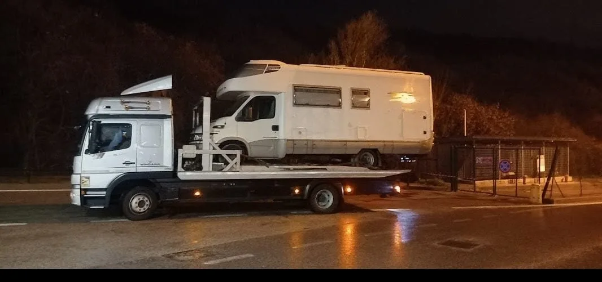
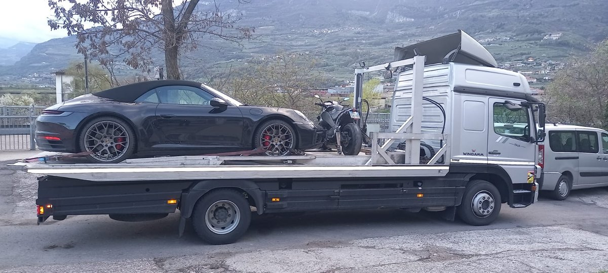
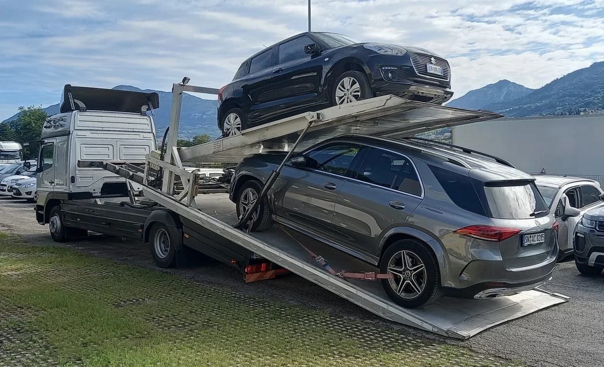
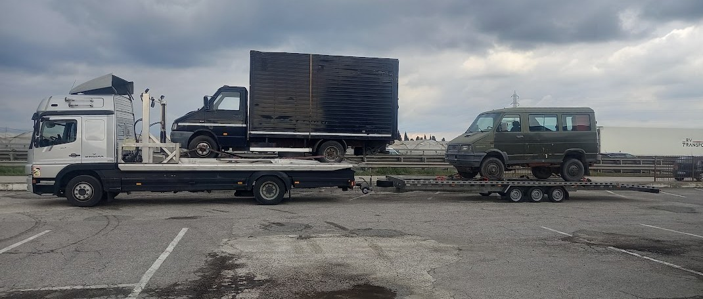
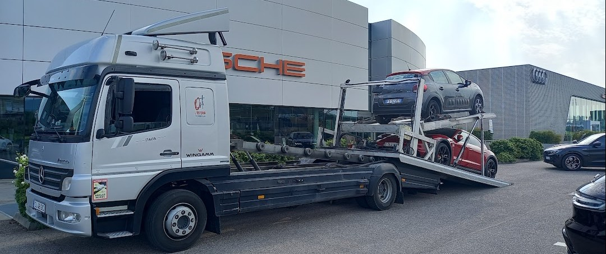

Soccorso stradale in tutta Europa
Sei fermo? Chiama: risponde Marcello, cioè chi guida il carro attrezzi. Nessun centralino in mezzo. Lavoriamo per privati e aziende, dalla base di Villa Lagarina, in provincia di Trento, vicino all'uscita autostradale Rovereto Nord.
388 955 0746 telefono e WhatsApp · risponde Marcello
- Quando
- Dalle 7 alle 22. Se siamo liberi partiamo subito, se non lo siamo te lo diciamo al telefono e concordiamo il giorno del ritiro
- Base
- Villa Lagarina e provincia di Trento, vicino all'uscita autostradale Rovereto Nord
- Cosa carichiamo
- Auto, moto, furgoni, camper e camion. Mezzo a doppio piano fino a 50 quintali, rimorchio fino a 35 quintali
- Fin dove
- Soccorso stradale e trasporti in tutta Italia, fino all'Unione Europea
- Preventivo
- Te lo diciamo al telefono, prima di partire

Cosa facciamo
-
Traino e trasporto
Il veicolo va dove decidi tu: la tua officina di fiducia, la carrozzeria, casa tua. Non abbiamo un'officina da riempire, quindi non abbiamo motivo di portartelo altrove. Lavoriamo per privati e per aziende.
-
Dopo un incidente
Mettiamo in sicurezza il mezzo, lo carichiamo e liberiamo la carreggiata. Se ci sono i vigili o i carabinieri, aspettiamo il via libera e ci occupiamo noi del resto.
-
Chiavi chiuse dentro
Apertura della vettura senza rompere niente. Capita più spesso di quanto pensi, soprattutto ai distributori e nei parcheggi.
-
Recupero fuori strada
Fosso, scarpata, ghiaia, neve, prato bagnato. Si recupera con il verricello e si rimette in carreggiata.
-
Camper, furgoni e camion
Autocaravan, camion, furgoni lunghi, rimorchi: il mezzo a doppio piano porta fino a 50 quintali, il rimorchio fino a 35 quintali. Dicci ingombro e peso quando chiami, così arriviamo con l'attrezzatura giusta al primo giro.
-
Moto, auto e rimorchi
Moto, scooter, auto di ogni tipo, veicoli commerciali e rimorchi. Le moto si legano a parte, non si trainano. Quando chiami dicci il modello: serve a sapere quale attrezzatura caricare.
Il mezzo
Un pianale scorrevole a doppio piano che porta fino a 50 quintali, più un rimorchio fino a 35 quintali. In pratica auto, moto, furgoni, camper e camion: uno o più mezzi in un viaggio solo.




Cosa succede quando chiami
Due passaggi, nessun modulo da compilare, nessuna attesa in linea.
-
1 di 2
Dici dove sei
Un incrocio, un cartello, il numero civico più vicino. Se non lo sai — di notte, su una statale, capita a tutti — usa il pulsante qui sotto: il telefono legge la posizione e la scrive lui su WhatsApp.
-
2 di 2
Ti diciamo quanto e quando
Un tempo di arrivo vero e il prezzo, prima di muoverci. Preferiamo dirti venti minuti e arrivare in venti, che dirtene cinque e farti aspettare al freddo.
E se in quel momento non siamo liberi te lo diciamo subito, invece di farti aspettare per niente: il mezzo lo lasci dov'è in sicurezza e concordiamo il giorno in cui passiamo a prenderlo.
Non siamo convenzionati con le assicurazioni, ma ti rilasciamo la fattura: con quella puoi chiedere il rimborso alla tua assicurazione.
Non operiamo 24 ore su 24 e non operiamo in autostrada
Quanto costa
La risposta onesta è: dipende. Ma te la diamo prima di partire, non quando siamo già lì, a meno che sul posto non ci siano problemi che richiedono più tempo per il carico.
Da cosa dipende
Da tre cose soltanto: da dove sei, da dove va portato il veicolo e quando serve. Al telefono ci bastano trenta secondi per dirti la cifra.
Non troverai un prezzo civetta su questa pagina. Chi scrive «da 49 euro» in grande, poi all'arrivo te ne chiede altri: preferiamo dirti la cifra vera subito.
Domande frequenti
A che ora posso chiamare?
Dalle 7 alle 22. Non siamo un servizio attivo 24 ore su 24. Se siamo liberi partiamo, se non lo siamo te lo diciamo in quel momento.
E se non è un'emergenza non serve aspettare nessuno: il mezzo lo lasci in un posto sicuro e concordiamo insieme il giorno in cui passiamo a prenderlo.
Che mezzi caricate, e fino a che peso?
Auto, moto e scooter, furgoni, camper e autocaravan, camion e rimorchi. Il mezzo a doppio piano porta fino a 50 quintali, il rimorchio fino a 35 quintali: uno o più mezzi in un viaggio solo.
Quando chiami dicci che veicolo è e quanto pesa: serve a sapere quale attrezzatura caricare e a darti la cifra giusta al telefono.
Posso scegliere io l'officina dove portate l'auto?
Sì, sempre. Il veicolo va dove dici tu: la tua officina di fiducia, la carrozzeria, il concessionario o casa tua. Non abbiamo un'officina nostra da riempire.
Come faccio a dirvi dove sono se non conosco la strada?
Usa il pulsante Mandami la posizione in cima alla pagina: il telefono legge le coordinate e apre WhatsApp con il punto sulla mappa già scritto dentro. Un tap, e sappiamo esattamente dove sei.
Se preferisci il telefono, ci basta un cartello, un incrocio, il chilometro della statale o il nome dell'ultimo paese che hai passato.
Contatti
Valeroad — soccorso stradale e carro attrezzi Via Zandonai 105, 38060 Villa Lagarina (TN) 388 955 0746 — telefono e WhatsAppPrima di chiamare, se riesci
Tieni a mente tre cose: dove sei (anche solo l'ultimo paese o un cartello), che veicolo è (marca, modello, se è elettrico) e cosa è successo (non parte, gomma, incidente, fuori strada).
Con queste tre risposte la chiamata dura un minuto e il mezzo giusto parte subito. Se non le hai, chiama lo stesso: le troviamo insieme.